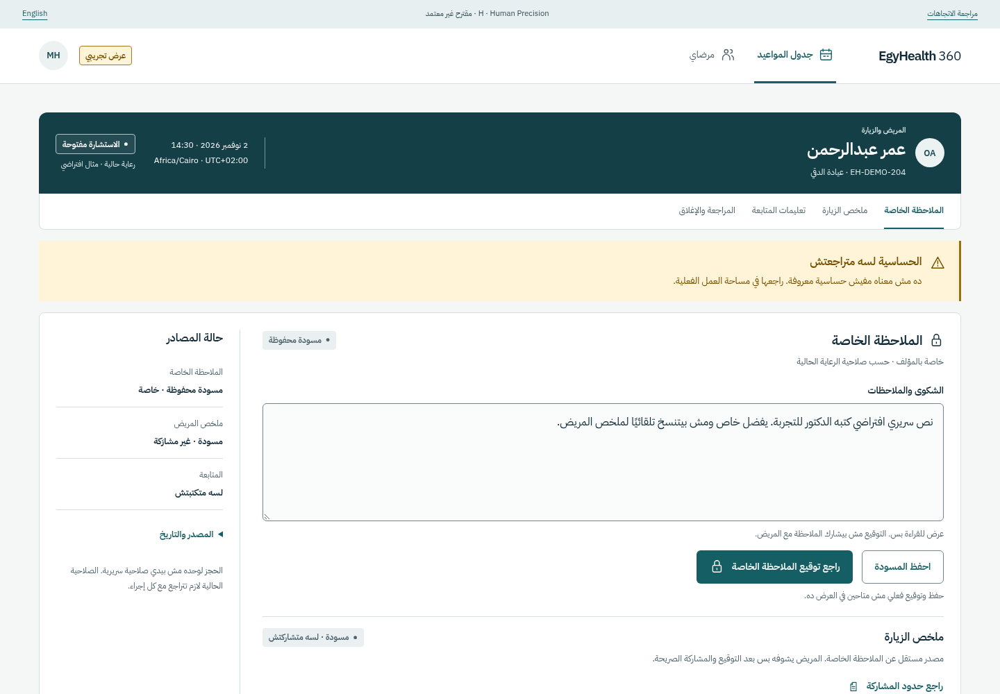
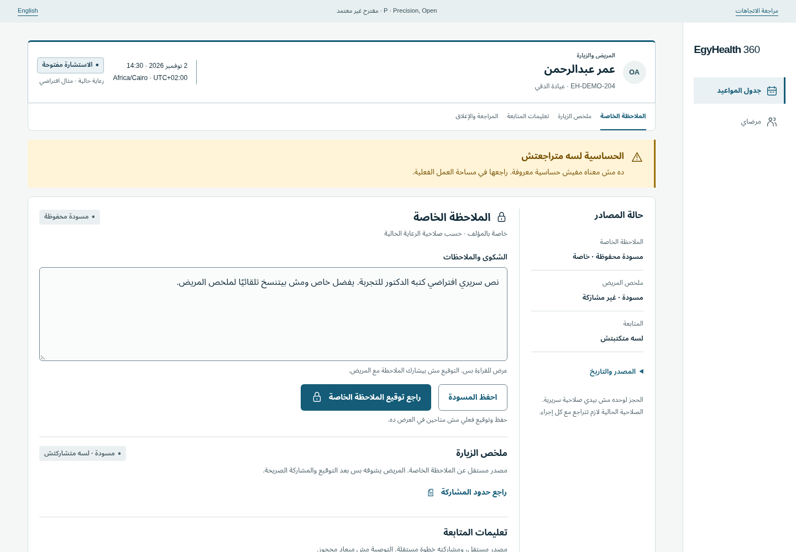

H / UNSELECTED
Human Precision
Patient / Arabic

Open Arabic · Open English · Full desktop PNG · Full mobile PNG
Clinician / Arabic

Open Arabic · Open English · Full desktop PNG · Full mobile PNG
EQUAL CONTENT / EQUAL VIEWPORTS
Both use the committed D/E/F synthetic facts, accepted navigation and independent source meanings. Patient context is 2 November 2026; these are dated design fixtures.
H / UNSELECTED
Open Arabic · Open English · Full desktop PNG · Full mobile PNG

Open Arabic · Open English · Full desktop PNG · Full mobile PNG
P / UNSELECTED

Open Arabic · Open English · Full desktop PNG · Full mobile PNG

Open Arabic · Open English · Full desktop PNG · Full mobile PNG
| Role | H Arabic | H English | P Arabic | P English |
|---|---|---|---|---|
| Patient | H · AR | H · EN | P · AR | P · EN |
| Clinician | H · AR | H · EN | P · AR | P · EN |
| Pharmacy | H · AR | H · EN | P · AR | P · EN |
| Laboratory | H · AR | H · EN | P · AR | P · EN |
| Admin | H · AR | H · EN | P · AR | P · EN |
Merged Patient evidence · Merged Clinician evidence · Comparative scorecard